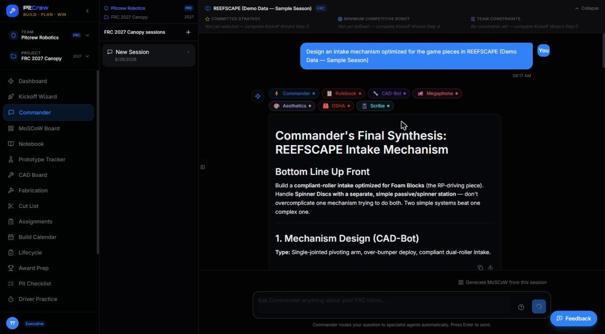
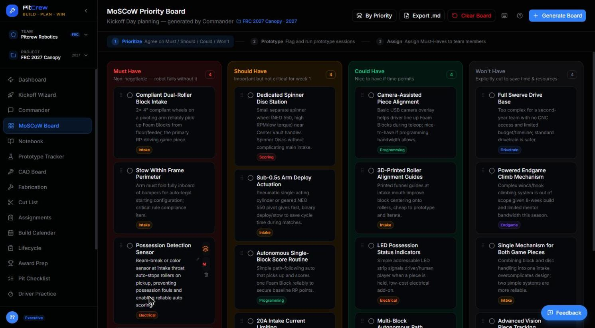
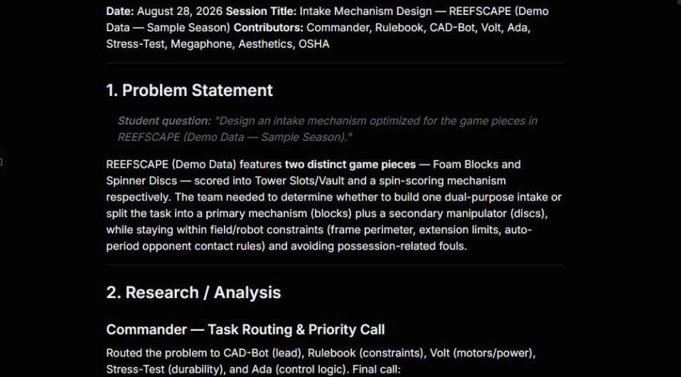
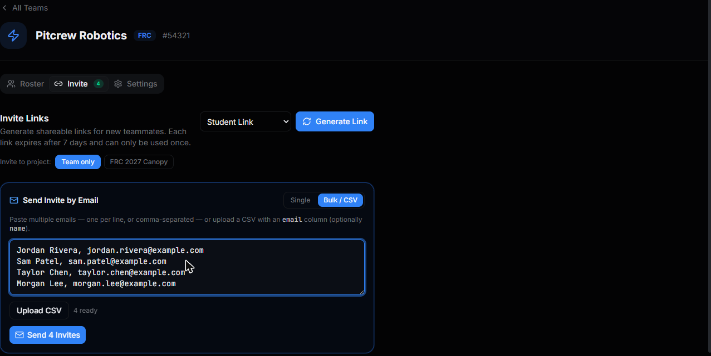
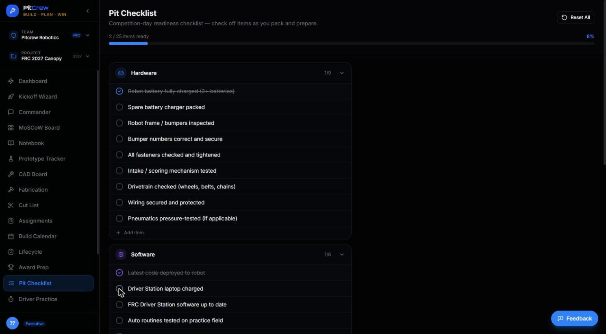
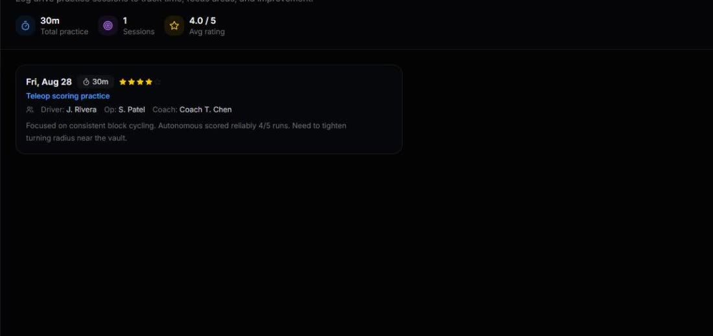

Run a better build season.
PitCrew is a mentor-assist command center for small and rebuilding FRC & FTC teams. Turn kickoff decisions and build-season work into organized plans, tasks, and documentation.
What does your team do the moment Kickoff ends?
Every FRC and FTC season starts the same way: a game reveal, a room full of ideas, and no structure to turn them into a plan. The Kickoff Wizard is PitCrew's answer — a guided session that takes your team from "we just watched the reveal video" to a scored strategy, a defined robot, and a build schedule, in one sitting.

Decision Matrix — AI pre-scores every strategy your team is considering. Override anything you disagree with.

Match Strategies — five distinct, game-specific options before you commit to one.

Build Schedule — the payoff. A week-by-week plan, generated, not guessed at.
One session sets up your whole season.
The Kickoff Wizard isn't a one-off form — it's the input that makes every other PitCrew tool useful from day one.
Kickoff
Game notes, team constraints, a scored strategy, and a defined robot — all captured in one guided session.
Plan
Your Kickoff session feeds MoSCoW priorities, CAD requests, and a build schedule automatically — nothing re-typed.
Build & Document
Ask Commander anything as you build. Every session becomes a dated engineering notebook entry, automatically.

Commander routes your question to the right specialists and returns one synthesized answer — cited, not vague.
Ask anything. Commander routes to the right agents automatically.
Behind Commander are 17 specialist agents — covering engineering, operations, outreach, awards, documentation, and student onboarding. You never need to know which one to ask.
See a build-season workflow, start to finish.
An updated walkthrough — including the Kickoff Wizard flow above — is ready to watch.
See PitCrew in Action
Watch how PitCrew turns Kickoff Day into a documented plan, using the live application.
Open PitCrew →Everything your Kickoff session sets in motion.
One shared board for priorities, a notebook that writes itself, and an invite flow built for a whole roster — not one student at a time.

MoSCoW Board
One shared priority list — Must, Should, Could, Won't — generated straight from your Kickoff session.

Notebook
Commander sessions can create dated engineering-notebook entries that preserve the question, specialists consulted, and recommendations for the team to review.

Bulk / CSV Invite
Paste your whole roster at once, or upload a CSV. No more inviting students one at a time.
Ready for the pit, not just the shop.
The same structure that got you through build season keeps working on event day.

Pit Checklist
A real competition-day readiness list across hardware, software, and safety — not a blank page the morning of.

Driver Practice
Log every practice session — focus area, duration, and a rating — so improvement is visible, not just felt.
Stop explaining the same thing three times.
Visibility across every subsystem, documentation that's ready for judging, and a process that survives roster turnover season to season.
Real ownership, real structure.
The AI drafts, you decide. Ask Commander anything, and leave every session with a notebook entry that's actually worth reading.
Ready to organize your build season?
Launch PitCrew and start your team's Kickoff session — no credit card, no lengthy setup.